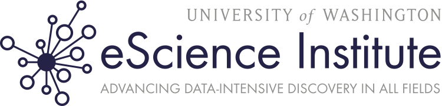

We are very pleased to announce that the eScience Institute at the University of Washington has become a partner of the Software Carpentry Foundation.

Since its creation in 2008, the eScience Institute has worked to create the intellectual and physical infrastructure needed to meet the challenges of doing science in a world in which gigabytes of new data are acquired every day. At the core of the eScience Institute are individuals who have proven track records in developing and applying advanced computational methods and tools to real world problems. To support them, and the researchers that they support in turn, the institute engages in a wide range of activities from training and fellowships to tool development and the provision of computing and storage facilities.